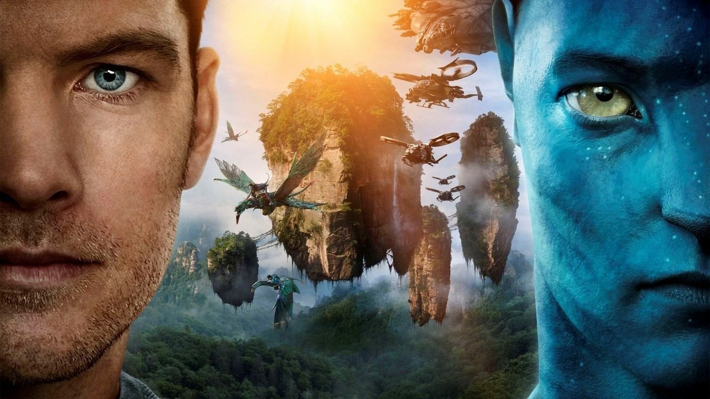

Интерстеллар (2014)

Когда засуха, пыльные бури и вымирание растений приводят человечество к продовольственному кризису, коллектив исследователей и учёных отправляется сквозь червоточину (которая предположительно соединяет области пространства-времени через большое расстояние) в путешествие, чтобы превзойти прежние ограничения для космических путешествий человека и найти планету с подходящими для человечества условиями.
ПодробнееАватар (2009)
Бывший морпех Джейк Салли прикован к инвалидному креслу. Несмотря на немощное тело, Джейк в душе по-прежнему остается воином. Он получает задание совершить путешествие в несколько световых лет к базе землян на планете Пандора, где корпорации добывают редкий минерал, имеющий огромное значение для выхода Земли из энергетического кризиса.
Подробнее